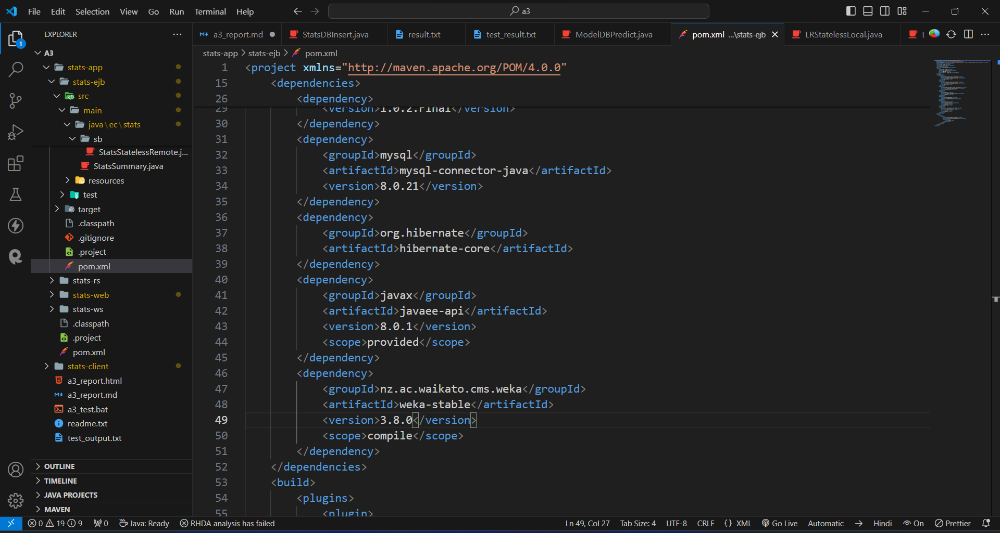
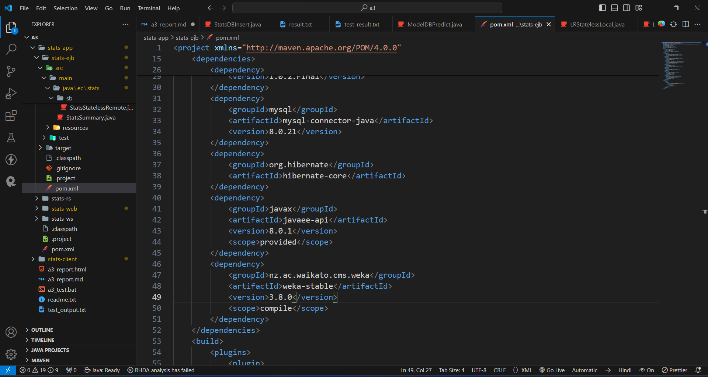

A3 Report
Author: Mohammed Sohail Ahmed
Date: 2024-02-28
Check readme.txt for course work statement and self-evaluation.
Q1 Web service project (programming)
Q1.1 SOAP WS
Complete? Yes
Image caption
Q1.2 SOAP WS clients
Complete? Yes


Q1.3 RESTful Web service
Complete? Yes


Q2 Linear regression for EC (programming)
Q2.1 Weka API programming
Complete? Yes


Q2.2 LR Model in Database
Complete? Yes
Q2.3 LR Session Bean Component
Complete? Yes

 

Q2.4 LR Web Component
Complete? Yes


Q3 Batch test (test)
Q3.1 Create test output
Complete? Yes or No
test output
References
- CP630 a3
- Add your references if you used any.